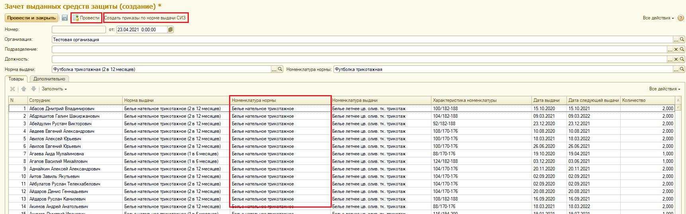

Зачет выданных средств защиты.
Функционал данного обработчика потребуется Вам в случае, если необходимо перезачесть историю выданных ранее СИЗ по норме «Норма1» на другую норму «Норма2», отличающуюся названием номенклатуры нормы, а, следовательно, и самой нормы выдачи СИЗ.
К примеру, ранее вы осуществляли выдачу по норме «Белье нательное 2 в 12 месяцев). Заказчик потребовал изменить норму на «Футболка 2 в 12 месяцев», однако учесть историю обеспечения по номенклатуре нормы «Белье нательное» для новой нормы.
В этом случае Вам необходимо создать новую норму выдачи, назначить ее на рабочие места, создать и провести «Приказ по нормам выдачи СИЗ».
Далее необходимо создать новый документ «Зачет выданных средств защиты»:
Во вновь созданном документе Вам необходимо заполнить поля:
Организация. Поле обязательно для заполнения.
Подразделение. Заполняется в то случае, если необходимо произвести перезачет для определенного подразделения. Возможно одновременное заполнение с полем «Должность»
Должность. Заполняется в то случае, если необходимо произвести перезачет для определенной должности. Возможно одновременное заполнение с полем «Подразделение»
Если перезачет необходимо провести в рамках всей организации, то поля «Подразделение» и «Должность» необходимо оставить незаполненными.
Норма выдачи. Поле обязательно для заполнения. В случае идентичных формулировок «Норм выдачи», обращайте внимание на код нормы выдачи или сразу вводите код для быстрого поиска.
Далее необходимо заполнить табличную часть истории выдачи, которую требуется перезачесть для новой нормы выдачи.
Нажмите «Заполнить»:
1. По складу выдачи.
Табличная часть заполняется историей выдачи по потребности, которая была произведены с выбранного вами склада.
2. По списку сотрудников.
Табличная часть заполняется историей выдачи по потребности, которая была произведены выбранными вами сотрудникам.
3. По МВЗ
Табличная часть заполняется историей выдачи по потребности, которая была произведена сотрудникам с учетом выбранного вами МВЗ.
4. По нормам выдачи
Табличная часть заполняется историей выдачи по потребности, строго по выбранной вами норме выдачи.
5. По номенклатуре нормы.
Табличная часть заполнится строго по выбранной вами номенклатуре нормы, всеми выдачи произведенными по ней, не учитывая нормы выдачи.
Уточнение:
«Белье нательное» - это номенклатура нормы
«Белье нательно 2 в 12 месяцев» - это нормы выдачи. Вариаций может быть значительное количество с отличием по условию, основанию, виду расчета и т.п.
В случае примера, мы заполним табличную часть по номенклатуре нормы «Белье нательное»

Как видно на скриншоте табличная часть заполнилась историей выдачи. При необходимости вы можете удалять строки, перезачет произойдет только по отраженным в табличной части строкам.
Далее необходимо нажать «Провести»
Далее необходимо нажать «Создать приказы по нормам выдачи СИЗ».
Откроется окно с заполненной табличной частью, приказ необходимо провести.
После того, как вы проведете приказ - в потребности сотрудников произойдет перезачет по новой норме выдачи СИЗ.
В случае если вы произвели действия с ошибкой, то вначале необходимо отменить проведенный приказ, далее отменить проведенный «Зачет выданных средств защит».
Однако необходимо учесть возможные движения по потребности, которые произошли по потребности уже после проведения зачета и приказ.
Рекомендуем во избежание ошибок по движению потребности, обращаться к специалистам АСТБ за помощью.